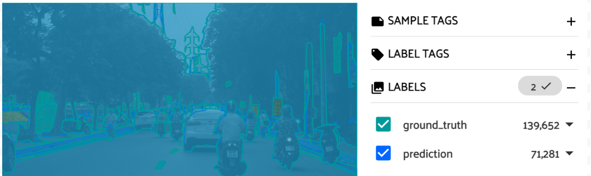

Dataset Exploration#
In a workspace, we can explore the dataset in different ways.
Filter by labels#
Show only (Select) detections as “person” in the “ground_truth”. Then there are 2,693 images with at least one person specified in the “ground_truth”. |
|
Not show (Exclude) detections as “person” in the “ground_truth”. Then there are 4,934 images with at least one person specified in the “ground_truth”. |
|
Show 35 images recognized as “ski” with 0.8 <= confidence score <= 0.95. |
|
Click the eye icon to show only 1 sample with grayscale tag. |
|
Filter by enter ID or filepath string. |
|
Click “Sort By Ascending” / “Sort By Descending” to sort samples with the “eval_tp” values in ascending / descending order. Limit the “eval_tp” by changing min, max values on the slider. |

Smart query#
We can filter our dataset by using queries. For more detail, please refer to smart query user guide
Navigate views#
Click the bookmark button to apply the filter on the right panel to the current view.

Click the back button to go back to the previous view. For example: undo the step (1) above.
Coloring annotations#
Switching between color by field and by value:
By field |
By value |
|---|---|
 |